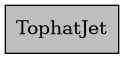
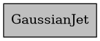

C++ API Reference
Overview
VegasAfterglow’s C++ core provides high-performance computation capabilities for GRB afterglow modeling. This section documents the C++ API for advanced users and developers who want to work directly with the C++ library.
Key Components
The C++ API is organized into several core components:
Jet Models: Implementations of different jet structure models (TophatJet, GaussianJet, PowerLawJet)
Ambient Medium: Classes for modeling the circumburst environment (ISM, Wind)
Radiation Processes: Components for calculating synchrotron and inverse Compton emission
Dynamics: Classes for evolving the blast wave and calculating shock parameters
Utilities: Helper functions and mathematical tools
C++ API Documentation
Namespaces
-
namespace con
Variables
-
constexpr Real c
-
constexpr Real c2
-
constexpr Real e
-
constexpr Real e2
-
constexpr Real e3
-
constexpr Real Gamma_cut
-
constexpr Real h
-
constexpr Real H0
-
constexpr Real inf
-
constexpr Real me
-
constexpr Real mp
-
constexpr Real Omega_L
-
constexpr Real Omega_m
-
constexpr Real pi
-
constexpr Real sigmaT
-
constexpr Real c
-
namespace math
Functions
-
inline auto const_injection() noexcept
-
inline auto gaussian(Real theta_c, Real height) noexcept
-
inline auto isotropic(Real height) noexcept
-
inline auto powerlaw(Real theta_c, Real height, Real k) noexcept
-
inline auto powerlaw_injection(Real t0, Real q) noexcept
-
inline auto square_injection(Real t0, Real t1) noexcept
-
inline auto step_injection(Real t0) noexcept
-
inline auto tophat(Real theta_c, Real hight) noexcept
-
inline auto const_injection() noexcept
-
namespace evn
Core Classes
-
class Medium
-
class Ejecta
Public Members
-
TernaryFunc deps_dt
Energy injection rate per solid angle as a function of (phi, theta, t) Default is no energy injection (zero)
-
TernaryFunc dm_dt
Mass injection rate per unit solid angle as a function of (phi, theta, t) Default is no mass injection (zero)
-
BinaryFunc eps_k
Initial energy per unit solid angle as a function of (phi, theta)
-
BinaryFunc Gamma0
Lorentz factor profile in the ejecta as a function of (phi, theta) Default is uniform (one) across all angles
-
BinaryFunc sigma0
Initial magnetization parameter as a function of (phi, theta)
-
bool spreading
Flag indicating if the ejecta spreads laterally during evolution.
-
Real T0
Duration of the ejecta in seconds.
-
TernaryFunc deps_dt
Jet Models
-
class TophatJet
Collaboration diagram for TophatJet:
Public Functions
-
inline TophatJet(Real theta_c, Real E_iso, Real Gamma0) noexcept
-
inline Real eps_k(Real, Real theta) const noexcept
-
inline Real Gamma0(Real, Real theta) const noexcept
-
inline TophatJet(Real theta_c, Real E_iso, Real Gamma0) noexcept
-
class GaussianJet
Collaboration diagram for GaussianJet:
Public Functions
-
inline GaussianJet(Real theta_c, Real E_iso, Real Gamma0) noexcept
-
inline Real eps_k(Real, Real theta) const noexcept
-
inline Real Gamma0(Real, Real theta) const noexcept
-
inline GaussianJet(Real theta_c, Real E_iso, Real Gamma0) noexcept
Ambient Medium
Radiation Processes
-
struct SynPhotons
Public Functions
-
Real compute_I_nu(Real nu) const
Returns the intensity at a given frequency nu.
-
Real compute_log2_I_nu(Real log2_nu) const
-
void update_constant()
Updates internal constants used in the spectral calculations.
Public Members
-
const SynElectrons *e
-
Real log2_I_nu_peak
-
Real log2_nu_a
-
Real log2_nu_c
-
Real log2_nu_m
-
Real log2_nu_M
-
Real nu_a
-
Real nu_c
-
Real nu_m
-
Real nu_M
-
Real compute_I_nu(Real nu) const
-
struct SynElectrons
Public Functions
-
Real compute_column_num_den(Real gamma) const
Calculates the column number density for a given electron Lorentz factor.
Public Members
-
Real column_num_den
-
Real gamma_a
-
Real gamma_c
-
Real gamma_m
-
Real gamma_M
-
Real I_nu_peak
-
Real p
-
size_t regime
-
Real Y_c
Private Functions
-
inline Real compute_gamma_spectrum(Real gamma) const
Computes the electron energy spectrum at a given Lorentz factor.
-
Real compute_column_num_den(Real gamma) const
-
struct InverseComptonY
Public Functions
-
InverseComptonY() noexcept
-
InverseComptonY(Real nu_m, Real nu_c, Real B, Real Y_T) noexcept
-
InverseComptonY(Real Y_T) noexcept
-
Real compute_val_at_gamma(Real gamma, Real p) const
-
Real compute_val_at_nu(Real nu, Real p) const
Public Members
-
Real gamma_hat_c
-
Real gamma_hat_m
-
Real nu_hat_c
-
Real nu_hat_m
-
size_t regime
-
Real Y_T
Public Static Functions
-
static Real compute_Y_Thompson(InverseComptonY const &Ys)
-
static Real compute_Y_tilt_at_gamma(InverseComptonY const &Ys, Real gamma, Real p)
-
static Real compute_Y_tilt_at_nu(InverseComptonY const &Ys, Real nu, Real p)
-
InverseComptonY() noexcept
Shock Dynamics
-
class Shock
Public Functions
-
Shock() noexcept = default
-
Shock(size_t phi_size, size_t theta_size, size_t t_size, Real eps_e, Real eps_B)
-
void resize(size_t phi_size, size_t theta_size, size_t t_size)
-
inline auto shape() const
-
Shock() noexcept = default
-
template<typename Ejecta, typename Medium>
class SimpleShockEqn -
Public Functions
Private Functions
-
template<typename Ejecta, typename Medium>
class ForwardShockEqn -
Public Functions
-
template<typename Ejecta, typename Medium>
class FRShockEqn -
Public Functions
-
Real compute_crossed_Gamma3(Real Gamma_rel, Real r) const
-
bool is_injecting(Real t) const
Public Members
-
Real const eps_e
-
Real Gamma4
-
Real const phi
-
Real r_x
-
Real const theta0
-
Real u_x
Private Functions
-
std::pair<Real, Real> get_injection_rate(Real t) const
-
Real compute_crossed_Gamma3(Real Gamma_rel, Real r) const
Physics and Utilities
-
class Observer
Public Functions
-
Observer() = default
Default constructor.
-
template<typename ...PhotonGrid>
Array flux(Array const &t_obs, Array const &band_freq, PhotonGrid const&... photons)
-
void observe_at(Array const &t_obs, Coord const &coord, Shock &shock, Real luminosity_dist, Real redshift)
-
template<typename ...PhotonGrid>
MeshGrid specific_flux(Array const &t_obs, Array const &nu_obs, PhotonGrid const&... photons)
-
template<typename ...PhotonGrid>
Array specific_flux(Array const &t_obs, Real nu_obs, PhotonGrid const&... photons)
-
template<typename ...PhotonGrid>
MeshGrid spectra(Array const &freqs, Array const &t_obs, PhotonGrid const&... photons)
-
template<typename ...PhotonGrid>
Array spectrum(Array const &freqs, Real t_obs, PhotonGrid const&... photons)
-
void update_required(MaskGrid &required, Array const &t_obs)
Public Members
-
MeshGrid3d time
Grid of observation times.
Private Functions
-
Real interpolate(InterpState const &state, size_t i, size_t j, size_t k, Real t_obs) const noexcept
-
template<typename ...PhotonGrid>
bool set_boundaries(InterpState &state, size_t i, size_t j, size_t k, Real log2_nu, PhotonGrid const&... photons) noexcept
Private Members
-
size_t eff_phi_grid
Effective number of phi grid points.
-
size_t jet_3d
Flag indicating if the jet is non-axis-symmetric (non-zero if true)
-
MeshGrid3d lg2_doppler
Log2 of Doppler factor grid.
-
Real lg2_one_plus_z
Log2(1 + redshift)
-
MeshGrid3d lg2_surface
Log2 of effective emission surface grid.
-
MeshGrid3d lg2_t
Log2 of observation time grid.
-
Real lumi_dist
Luminosity distance.
-
Real one_plus_z
1 + redshift
-
size_t t_grid
Number of time grid points.
-
size_t theta_grid
Number of theta grid points.
-
struct InterpState
-
Observer() = default
-
class Coord
Documenting C++ Code
When contributing to the C++ codebase, please follow these documentation guidelines:
Class and Function Documentation
Use Doxygen-style comments for all classes and functions:
/********************************************************************************************************************
* @brief Brief description of the function/class
* @details Detailed description that provides more information
* about what this function/class does, how it works,
* and any important details users should know.
*
* @param param1 Description of first parameter
* @param param2 Description of second parameter
* @return Description of return value
* @throws Description of exceptions that might be thrown
* @see RelatedClass, related_function()
********************************************************************************************************************/
Member Variable Documentation
For member variables, use inline Doxygen comments with ///<:
double energy; ///< Isotropic-equivalent energy in ergs
double gamma0; ///< Initial bulk Lorentz factor
Template Function Documentation
For template functions, make sure to document both the template parameters and the function parameters:
/********************************************************************************************************************
* @brief Brief description of the template function
* @details Detailed description of what the template function does.
*
* @tparam T The type of elements in the vector
* @tparam Comparator The comparison function type
* @param values Vector of values to be sorted
* @param comparator Comparator function to determine sorting order
* @return Sorted vector of values
********************************************************************************************************************/
template<typename T, typename Comparator = std::less<T>>
std::vector<T> sort_values(const std::vector<T>& values, Comparator comparator = Comparator()) {
// Implementation details
}
Inline Function Documentation
For inline functions, maintain the same documentation standard as regular functions:
/********************************************************************************************************************
* @brief Compute the square of a value
* @details This inline function efficiently computes the square of any numeric value.
*
* @param x The value to square
* @return The squared value
********************************************************************************************************************/
inline double square(double x) {
return x * x;
}
Example Class
Here’s an example of a well-documented class:
/********************************************************************************************************************
* @class GaussianJet
* @brief Implements a Gaussian jet profile where properties follow a Gaussian distribution with angle.
* @details This class provides a smooth model for GRB jets, characterized by core angle theta_c,
* isotropic equivalent energy E_iso, and initial Lorentz factor Gamma0 at the center.
********************************************************************************************************************/
class GaussianJet {
public:
/********************************************************************************************************************
* @brief Constructor: Initialize with core angle, isotropic energy, and initial Lorentz factor
* @param theta_c Core angle of the jet
* @param E_iso Isotropic equivalent energy
* @param Gamma0 Initial Lorentz factor
********************************************************************************************************************/
GaussianJet(Real theta_c, Real E_iso, Real Gamma0) noexcept;
/********************************************************************************************************************
* @brief Energy per solid angle as a function of phi and theta, with Gaussian falloff
* @param phi Azimuthal angle (unused)
* @param theta Polar angle
* @return Energy per solid angle with Gaussian angular dependence
********************************************************************************************************************/
Real eps_k(Real phi, Real theta) const noexcept;
private:
Real const norm_{0}; ///< Normalization factor for Gaussian distribution
Real const eps_k_{0}; ///< Peak energy per solid angle at center
Real const Gamma0_{1}; ///< Peak Lorentz factor at center
};
For more details on Doxygen commands, see the Contributing page.